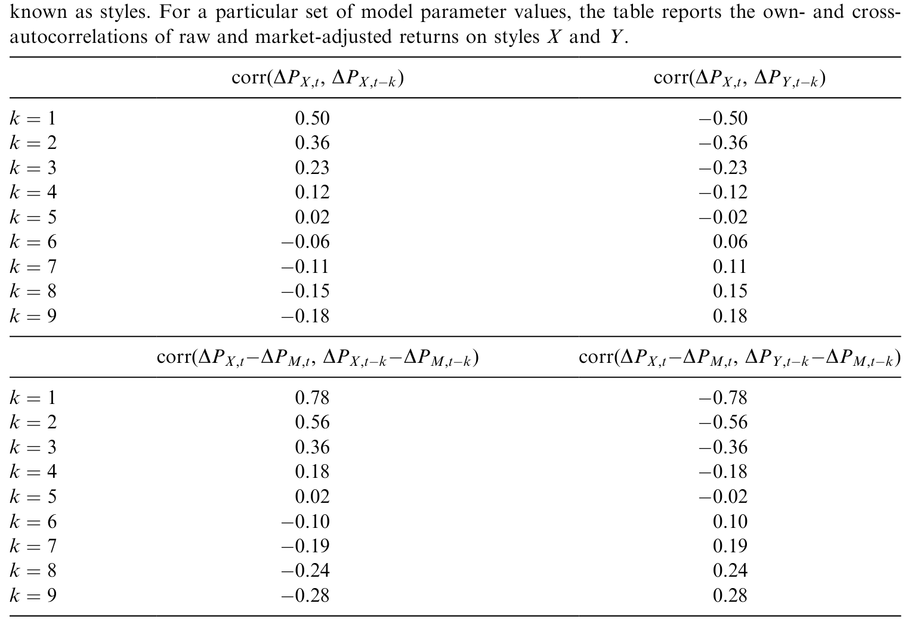
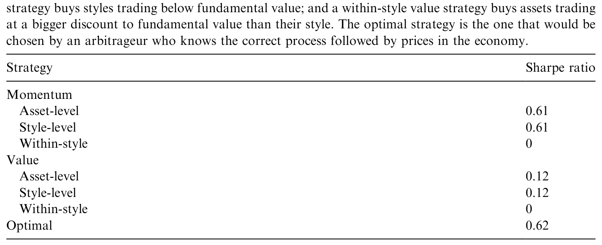
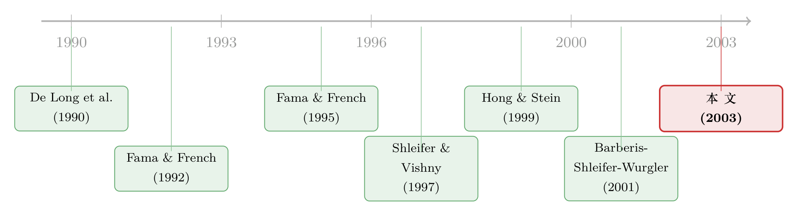

被「贴上同一个标签」的股票，就开始一起涨跌
本文读的是 Barberis & Shleifer (2003, Journal of Financial Economics)：当一部分投资者把资产先归类成「风格」、再按风格过去的相对业绩在风格之间搬钱，价格就会被这套「分类—追逐」的行为重新塑形——同一风格内的资产会过度共动，不同风格之间会共动不足；一只股票一旦被「重新归类」进某个风格，它就会更像那个风格；而风格层面的动量与价值策略，甚至比个股层面的同名策略更赚钱。整篇文章的主角，其实只有一句话：分类，本身就是一种定价力量。
1 一个被我们用得太顺手、以至于忘了它存在的动作
人类思考里最基本的一个动作是什么？是分类（classification）。我们把国家分成民主与专制，把职业分成蓝领与白领，把食物分成蛋白质与碳水。分类让我们能用有限的脑力去对付无限的世界——你不必认识每一种动物，只要知道「这是猫科」就够了。
金融市场也一样，而且更甚。一个投资者面对成千上万只证券，他几乎不可能逐只去想。于是他先把资产拢成几个大类：大盘股、价值股、政府债、风险投资……然后在这些「类」之间分配资金。这些类，业内有个名字，叫风格（style）；而「在风格之间、而不是在个券之间配钱」这件事，就叫风格投资（style investing）。
到这里都还是常识。真正有意思的问题是接下来这一个——
如果市场里有相当一批钱，是按「风格」而非按「个券」来流动的，那价格会变成什么样子？
这正是 Barberis 和 Shleifer 想回答的。他们的野心不大也不小：不是去解释某一个异象，而是用一个极简的模型，一口气把好几个看似不相干的实证现象——Fama-French 因子、小盘股风格的兴衰、1998–99 年价值股的反常表现、股票被纳入 S&P 500 后的共动——串到同一根逻辑线上。
2 两类人：搬钱的「追风者」与守价的「基本面交易者」
模型的世界很干净。有 2n 只风险资产，分属两个风格 X 和 Y（你不妨想成「旧经济」股和「新经济」股），每只资产终值是一连串现金流冲击的累加。市场里有两类投资者。
第一类是「追风者」（switchers）。 他们有两个标志性特征：第一，他们只在风格层面下注，对同一风格内的每只股票一视同仁、买一样多的份额；第二，他们按风格过去的相对业绩搬钱——哪个风格最近跑得好，就往哪个风格里加钱，加钱的钱从表现差的那个风格里抽。
为什么是「相对」业绩？作者讲了一个很现实的故事：追风者（想想养老金的发起人）一方面有外推预期（extrapolative expectations），相信「最近涨得好的、将来也会涨得好」；另一方面，他们又不愿让股票、债券、现金这三大类之间的配比偏离预设目标。两者一叠加，结果就是——他要加仓 X，就只能从它的「孪生风格」Y 里抽钱。于是需求变成了风格相对表现的函数。
「孪生风格」（twin style）是个很妙的细节：价值与成长、大盘与小盘，往往成对出现，且定义上互不重叠。人很容易掉进一个错觉——既然两者「相反」，它们的命运也必然「相反」：成长股前景好，价值股就一定差。钱于是在一对孪生风格之间来回倒。
第二类是「基本面交易者」（fundamental traders）。 他们是套利者，努力把价格拉回基本面。但作者借用 Shleifer & Vishny (1997) 的「套利的极限」给他们设了一道枷锁：他们的投资期限只有一期。投资人看不懂他们的策略，只会用短期收益来评判他们、并在他们短期亏损时撤资——这逼得套利者短视，不敢和错误定价死磕。
这正是全篇的张力所在：一边是顺着趋势、把价格越推越偏的追风者；另一边是想纠偏、却被短视绑住了手脚的套利者。谁也消灭不了谁，于是错误定价能长期存在。 关于「套利者为什么斗不过噪声」，可参见《无风险的钱没人捡，是因为捡它的人也会怕——重读「套利风险」与价值溢价》。
3 模型：把「分类 + 追涨」一步步推成一个价格公式
这是一篇有正式模型的论文，值得把推导摊开看一遍——因为它的全部结论，最后都浓缩在一个出奇简单的价格公式里。
3.1 现金流的三层结构
先约定基本面。对风格 X 里的资产 i，其现金流冲击拆成市场、风格、特质三层：
$$ e_{i,t} = c_M f_{M,t} + c_S f_{X,t} + \sqrt{1 - c_M^2 - c_S^2}\; f_{i,t} $$
三个因子各自方差为 1、互相正交。由此，同风格两只资产的现金流相关性是 c_M^2 + c_S^2，不同风格之间则只有 c_M^2。注意：模型其实并不要求风格一定对应着某个现金流因子；这一层结构只是为了「让风格在基本面上也说得通」而加的，可有可无。这一点后面会变得很关键。
3.2 追风者的需求：把「相对业绩」写进买单
追风者对资产 i（属于 X）的需求是：
$$ N^{S}_{i,t} = \frac{1}{n}\left[ A_X + \sum_{k=1}^{t-1} \theta^{k-1}\,\frac{\Delta P_{X,t-k} - \Delta P_{Y,t-k}}{2} \right] $$
读法是：基准配置 A_X，再加上一个「追涨项」——把过去每一期 X 相对 Y 的收益差 ΔP_{X,t-k} − ΔP_{Y,t-k} 按 θ^{k-1} 加权累加，越近的权重越大。参数 θ（0 < θ < 1）刻画追风者「往回看多远」，也就是资金流的持续性。
3.3 基本面交易者的需求与定价
基本面交易者是 CARA 偏好、只看一期。他们求解
$$ \max_{N_t}\; E^{F}_t\!\left(-\exp\!\left[-\gamma\left(W_t + N_t'(P_{t+1}-P_t)\right)\right]\right) $$
在正态假设下，最优持仓为
$$ N^{F}_t = \frac{(V^{F}_t)^{-1}}{\gamma}\left(E^{F}_t(P_{t+1}) - P_t\right) $$
他们充当做市商，把追风者的需求当作供给冲击来吸收。令总供给为 Q、市场出清，便得到定价式
$$ P_t = E^{F}_t(P_{t+1}) - \gamma V^{F}_t\,(Q - N^{S}_t) $$
把它向前迭代、并代入基本面交易者「认死理」的两个简化假设（协方差矩阵设为常数 V、对未来追风者需求的预期就等于其均值），非随机项消去后，价格塌缩成一个极其干净的形式：
$$ P_t = D_t + \gamma V N^{S}_t $$
代入 V 的具体结构，风格 X 中资产 i 的价格最终写成（差一个常数）：
这个公式是全篇的「指纹」。它告诉你：一只股票的价格 = 它自己的基本面 + 一个完全由「它所属风格 vs. 孪生风格的历史相对表现」决定的附加项。 附加项里没有它自己的特质消息，只有「它所在的篮子最近混得怎么样」。共动、自相关、动量、价值——后面所有结论，都是从这一项里长出来的。
其中价格冲击系数为
$$ \phi = \frac{n}{\gamma \sigma^2 \left(1 - \rho_1 + n(\rho_1 - \rho_2)\right)} $$
数值实现里，作者取 c_M = 0.25、c_S = 0.5、A_X = A_Y = 0、θ = 0.95、γ = 0.093、n = 50（即 100 只股票）。这组参数下，风格收益的标准差是现金流冲击标准差的 1.3 倍——一个对照美国历史数据不算离谱的「超额波动」水平；φ 的值是 1.25。
4 一个冲击，如何「凭空」造出一段长长的泡沫
把上面的价格公式跑起来，最直观的就是脉冲响应。设 t=1 时给风格 X 一次性的现金流好消息（e_{i,1}=1，此后归零，Y 全程无消息，D_{i,0}=50），看 X 的价格如何演化。
故事是这样展开的：好消息先把 X 的价格抬高一点点；这点「跑赢」被追风者看在眼里，下一期他们加仓 X、抽走 Y，把 X 的价格推得更高；更高的价格又吸引来更多追风者……于是在没有任何新基本面消息的情况下，X 的价格持续偏离它的基本面价值，形成一段又高又长的偏离。直到追风者的热情耗尽、套利或坏消息到来，风格才崩塌。一个风格的生命周期——诞生于一则好消息、在资金涌入中壮大、最后破灭——就这样被内生出来了。
请注意这里最反直觉的一点：X 的整段「泡沫」里，绝大部分涨幅与现金流无关。基本面只在第一期给了一记火星，剩下的全是「分类 + 追涨」这台机器自己烧出来的。
5 核心贡献：分类如何重写「谁和谁一起动」
模型一旦立住，结论就像多米诺骨牌一样倒下来。我把它们归到一句话上：风格投资重写了资产之间的相关结构。
(1) 同风格过度共动，异风格共动不足。 当追风者把钱在两个风格之间整进整出，同一风格里的所有股票被「一起买、一起卖」，它们的收益于是绑在了一起——哪怕它们的现金流毫不相关。反过来，X 和 Y 因为总是被反向操作，相关性被压低。最惊人的是：这种共动可以完全脱离基本面——哪怕现金流的协方差矩阵纹丝不动，价格层面的共因子照样凭空出现。这正好对上了 Fama & French (1995) 的那个困惑：小盘股、价值股的收益里有共同因子，却找不到对应的现金流共同因子。
(2) 重新归类，会改变共动。 一只股票一旦被「划」进一个新风格，它就会在划入之后更像那个风格——即便它的现金流性质没变。这是一个可证伪的、漂亮的预测，也是它姊妹篇 Barberis, Shleifer & Wurgler (2001) 实证检验的核心（关于一只股票被纳入 S&P 500 后如何「学会」跟着指数一起呼吸，可参见《被「打包」进同一个篮子的股票，就开始一起呼吸了》）。
(3) 风格收益的自相关结构。 模型预测：短期里，风格收益有正的自相关（own-autocorrelation，追涨的惯性）和负的交叉自相关（cross-autocorrelation，孪生风格被反向抽血）；长期里，两者符号反转（套利与基本面回归把价格拉回来）。其中关于「正自相关」的部分，早期模型已有；但负交叉自相关这一条，是本文框架比较独到的产物。下表给出了模拟数据里这些自相关与交叉自相关的量级。

Table 1: shows the magnitude of these own- and cross-autocorrelations for our
(4) 风格层面的动量与价值，比个股层面更猛。 既然驱动价格的引擎是「风格的相对表现」，那么直接在风格层面做动量（追过去赢家风格）和价值（买便宜风格）策略，自然就该比在个股层面做同样的策略更有效。模型确实预测：资产层面的动量、价值策略能赚钱（和别的模型一样），但风格层面的同名策略能赚得一样多、甚至更多——这是本文额外、且偏新的一条预测。下表汇报了模拟数据里这两类策略的夏普比率对比。

Table 2: shows that, in our simulated data, these strategies offer attractive Sharpe
这条预测后来被搬进了实证的检验台。关于「资金往哪只篮子流、股票就往哪只篮子涨」的风格层面反转与追涨，可参见《钱往哪只「篮子」流，股票就往哪只篮子涨——风格层面的反转与追涨》。
6 文献脉络
这篇论文坐在一条很清晰的演化线上。
源头是噪声交易者范式。De Long, Shleifer, Summers & Waldmann (1990a, b) 给出了两块基石：一是「噪声交易者风险」让理性套利者也不敢全力纠偏；二是「正反馈交易者 + 套利者」的世界里，聪明钱可能助涨而非平抑泡沫——追风者就是正反馈交易者的近亲。Shleifer & Vishny (1997) 的「套利的极限」则给套利者套上了短视的枷锁。

承接的是行为资产定价的两条支线。一条是 Fama & French (1992, 1993, 1995) 用规模、账面市值比构造出的共同因子——它们是实证上的谜面，本文要给的是谜底。另一条是 Hong & Stein (1999)：投资者按绝对过去业绩配置、产生动量与反转。Barberis & Shleifer 把它往前推了关键一步——把「按绝对业绩、在个券间配置」换成「按相对业绩、在风格间配置」，这两处改动，正是此前理论文献几乎没碰过的地方。
落点则是它自己的实证姊妹篇 Barberis, Shleifer & Wurgler (2001) 关于共动的检验，以及 Brown & Goetzmann (1997)、Chan, Chen & Lakonishok (2002) 等对「风格」的实证刻画。理论与实证，在这条线上几乎是并肩往前走的。
7 评论与延伸（Q&A + 研究方向）
(a) 几个可能的疑问
Q：这和经典的「噪声交易者模型」到底差在哪？凭什么说是新东西？
差在两个词：风格和相对。经典模型（如 De Long et al. 1990a、Hong & Stein 1999）里，投资者是在个券之间、按绝对业绩配钱。本文把配置单位上移到「风格」、把业绩判据换成「相对孪生风格」。正是这两处改动，才生出了「异风格共动不足」「负交叉自相关」「风格层面策略更优」这些个券层面模型给不出的预测。
Q：「共动」一定要靠基本面才能解释吗？这模型的硬核主张是什么？
它的硬核主张恰恰是「不需要」。在式
P_t = D_t + γ V N^S_t里，只要追风者在两个风格之间整进整出，同风格资产的价格就被绑在一起——哪怕把现金流协方差矩阵设成对角阵（毫无共同基本面），价格层面的共因子照样出现。这正是它能解释 Fama-French「有收益共因子、却没现金流共因子」之谜的关键。
Q：套利者为什么不把这种可预测的错误定价赚干净？
两道锁。第一，他们只有一期投资期限（Shleifer & Vishny 1997 的逻辑），不敢和趋势死磕。第二，作者还指出：即便放进更聪明、看懂了追风者需求函数的套利者，按 De Long et al. (1990a) 的结论，他们也可能选择先买入、等更多追风者进场把价推得更高再撤——即放大而非对冲错误定价。所以作者干脆把这种套利者排除在外。
Q：模型说「风格收益短期正自相关、长期反转」，这不就是老生常谈的动量+反转吗？
动量与反转的部分确实和别的模型重合。本文真正偏新的，是交叉维度：孪生风格之间短期负、长期正的交叉自相关。这是「钱在一对风格之间来回倒」留下的独特指纹，单券模型里没有它。
Q：风格在现实里到底怎么界定？会不会是「事后挑出来的」？
作者给的操作化办法是看基金产品：如果大量基金经理推出「小盘股基金」，说明在投资者心里「小盘股」就是一个风格。大盘、价值、成长、行业、国别、指数成分股，都是例子。当然这把界定权交给了市场习惯，存在主观性——这也是后续实证最容易被挑战的地方。
Q：模型里追风者的策略不是自融资的，这是不是作弊？
作者老实承认了：式 (9)、(10) 的策略并非自融资，他们假设追风者有足够的禀赋来供养这套策略。这是为了回避「噪声交易者能否长期存活」这个本文不想纠缠的问题，从而专注于「当追风者确实在参与定价时，价格会怎样」。这是一个有意识的简化，不是疏忽。
(b) 几个可能的研究问题与提案
1. 风格投资能搬到公司债市场吗？ - 【经济故事】公司债天然被按评级（AAA/BBB/高收益）、久期、行业切成风格，且大量资金（保险、债基）是按这些桶来配置的。若「分类—追涨」机制成立，同评级桶内的债券应过度共动，而评级被调整（如跌出投资级）的债券应在调整后更像新桶——这正是本文「重新归类提高共动」预测的债市版本。 - 【可行性】中。需要 TRACE 成交数据 + 评级历史 + 债基/保险持仓（如 NAIC、eMAXX）。识别上可借「评级跌穿投资级」这一准外生的重新归类事件做事件研究，但要把强制抛售（fire sale）与纯共动效应分开，是难点。
2. 外资是不是一类「国别风格」追风者？ - 【经济故事】Choe et al. (1999)、Froot et al. (2001) 已发现外资倾向于买入近期表现好的国家——这几乎是「在国别风格之间按相对业绩搬钱」的现成证据。一个自然的预测：被外资当作同一「新兴市场」风格的国家，其股市应过度共动，而被「升格」进某指数（如 MSCI 纳入）的市场，纳入后应更像该风格。 - 【可行性】高。MSCI 纳入/剔除是干净的重新归类冲击，国别指数与外资流向数据可得，断点/事件研究都做得起来。
3. 风格层面策略 vs. 个股层面策略，谁的「交易成本后」净夏普更高？ - 【经济故事】本文预测风格层面动量/价值更猛，但风格层面交易（买卖整篮 ETF）成本远低于逐只换仓。若把流动性成本算进去，风格层面策略的相对优势可能被进一步放大——这对「异象在控制成本后是否还活着」的争论有直接含义。 - 【可行性】高。用 ETF/行业组合即可实现风格层面策略，与个股层面策略做成本后对比，数据与方法都成熟。
4. ETF 的爆发，是不是给「追风者」装上了涡轮？
- 【经济故事】ETF 让「按风格整进整出」的交易成本骤降、可得性骤升，等于直接放大了模型里的「追风者份额」、压低了价格冲击系数 φ。可检验：一只股票被纳入越多风格 ETF 后，其与所属风格的共动是否上升、与基本面的联系是否被稀释。
- 【可行性】中。ETF 持仓数据可得，但要把 ETF 渠道的需求与传统指数基金、主动资金分离，识别上需要细致设计。
8 我的判断
这篇论文的分量，不在数学难度（模型简单得近乎朴素），而在它把「分类」这个被经济学长期当作认知背景的动作，提升成了一种可以写进价格方程的定价力量。一个式子 P_t = D_t + γ V N^S_t，统一解释了共动之谜、风格生命周期、动量与价值、指数纳入效应——这种「用一台小机器点亮一整片实证地形」的能力，是它成为引用经典的根本原因。
但作为评述者，我对识别保留两点担忧。其一，模型是纯理论的，本文自己并不做实证——所有「验证」都外包给了姊妹篇和后续文献，而风格的界定本身带主观性，实证里很难把「共动来自分类行为」与「共动来自未被观测到的共同基本面」彻底分开。其二，模型里把更聪明的套利者直接「请出场」，靠的是 De Long et al. (1990a) 的助涨逻辑；但现实中聪明钱的构成更复杂，这个排除假设有多稳健，是模型边界上最脆弱的一环。
我最想看到的后续，是把这套机制搬到有清晰、准外生的「重新归类」事件的市场里去做检验——评级跌穿投资级的公司债、被纳入或剔除某主要指数的个股或国别。如果「划入新篮子」这个动作，能在控制住基本面与强制交易之后，仍然独立地抬高一只资产与新风格的共动，那才算是给这个二十多年前的优雅猜想，钉上了最硬的一颗钉子。
参考文献
- Barberis, N., Shleifer, A. (2003). Style investing. Journal of Financial Economics 68(2), 161–199.
- Barberis, N., Shleifer, A., Wurgler, J. (2001). Comovement. Unpublished working paper, University of Chicago.
- Brown, S., Goetzmann, W. (1997). Mutual fund styles. Journal of Financial Economics 43(3), 373–399.
- Chan, L., Chen, H., Lakonishok, J. (2002). On mutual fund investment styles. Review of Financial Studies 15(5), 1407–1437.
- Choe, H., Kho, B.C., Stulz, R. (1999). Do foreign investors destabilize stock markets? Journal of Financial Economics 54(2), 227–264.
- De Long, J.B., Shleifer, A., Summers, L., Waldmann, R. (1990a). Positive feedback investment strategies and destabilizing rational speculation. Journal of Finance 45(2), 375–395.
- De Long, J.B., Shleifer, A., Summers, L., Waldmann, R. (1990b). Noise trader risk in financial markets. Journal of Political Economy 98(4), 703–738.
- Fama, E., French, K. (1992). The cross-section of expected stock returns. Journal of Finance 47(2), 427–465.
- Fama, E., French, K. (1993). Common risk factors in the returns on stocks and bonds. Journal of Financial Economics 33(1), 3–56.
- Fama, E., French, K. (1995). Size and book-to-market factors in earnings and returns. Journal of Finance 50(1), 131–155.
- Froot, K., O'Connell, P., Seasholes, M. (2001). The portfolio flows of international investors. Journal of Financial Economics 59(2), 149–193.
- Hong, H., Stein, J. (1999). A unified theory of underreaction, momentum trading and overreaction in asset markets. Journal of Finance 54(6), 2143–2184.
- Shleifer, A., Vishny, R. (1997). The limits of arbitrage. Journal of Finance 52(1), 35–55.